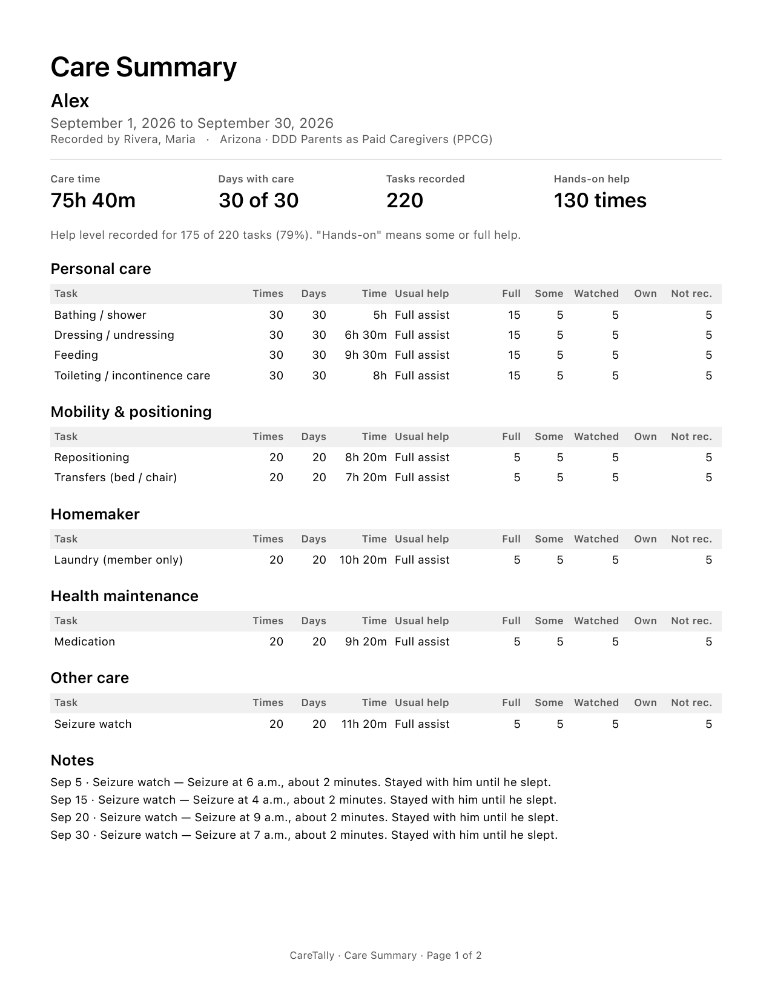
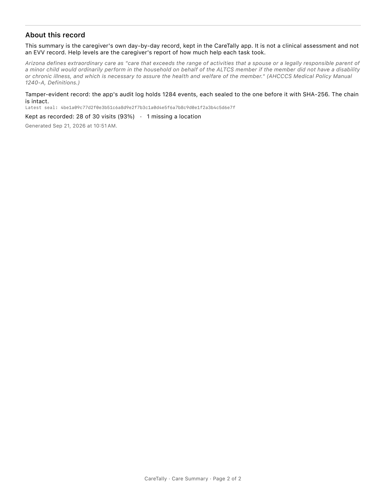

For parents and family paid through DDD, ALTCS, or the VA — the hours you worked and the care it took.
CareTally is not an AHCCCS EVV vendor. It does not connect to the AHCCCS EVV aggregator and it does not send your visits anywhere. Keep clocking in with the app your agency or fiscal agent gave you. CareTally keeps your own record alongside it.
Pick your program once. CareTally uses its name, its services and its limits from then on.
| Program | Paid through | What CareTally adds |
|---|---|---|
| DDD Parents as Paid Caregivers (PPCG) | DES‑DDD | Weekly and daily hours left, the 6 AM–10 PM window, and a Care Summary for reassessment |
| ALTCS Self-Directed Attendant Care (SDAC) | Your fiscal employer agent | A signed timesheet from what you already tapped |
| ALTCS Agency with Choice (AWC) | Your agency | Your own record, and the service codes your agency bills |
| DDD Independent Provider | DES‑DDD | Your own record and timesheet |
| DDD Qualified Vendor employee | Your vendor | Your own record, beside the vendor's app |
| VA Veteran-Directed Care | Your VA program | Your own record and timesheet |
| Private pay | Your family | A clear record of the hours |
If you are paid through Parents as Paid Caregivers, these limits apply. CareTally shows where you stand, and warns you before you pass one. It never stops the timer.
| Rule | Where it comes from |
|---|---|
| 20 hours a week for each child, from July 1, 2026. It was 40 hours from July 1, 2025. | HB 2945 (2025) |
| No more than 16 hours in any 24, across every child you care for. | AHCCCS Medical Policy Manual 1240-A |
| Between 6:00 AM and 10:00 PM, unless your child's care plan says otherwise. CareTally asks why, and prints your reason on the timesheet. | HB 2945 (2025) |
| One agency. You can work through only one agency for PPCG. | AMPM 1240-A; HB 2945 |
| Your child must be there. No pay while your child is away, in licensed care, or for hours the needs assessment did not authorize — overnight hours included. | AMPM 1240-A |
| Six months in Arizona before you start. | AMPM 1240-A; HB 2945 |
Checked against the sources on September 18, 2026. Rules change. Your agency and your support coordinator have the final word on what you may bill.
An assessor asks whether your care goes past what any parent would do. Arizona puts it this way:
“Care that exceeds the range of activities that a spouse or a legally responsible parent of a minor child would ordinarily perform in the household … if the member did not have a disability or chronic illness.”
AHCCCS Medical Policy Manual 1240-A, Definitions — “Extraordinary care”
CareTally builds your answer a day at a time. When a task ends, you tap how much help it took. When the reassessment comes, you pick a date range and CareTally makes a Care Summary: every task, how often, on how many days, and how much help — plus your own notes.


The timer, the task log and the last 14 days are free, with one PDF a month. Pro is $3.99 a month or $29.99 a year for all your history, every PDF you need, and the hours-left tracker.
No account. Everything stays on your phone.